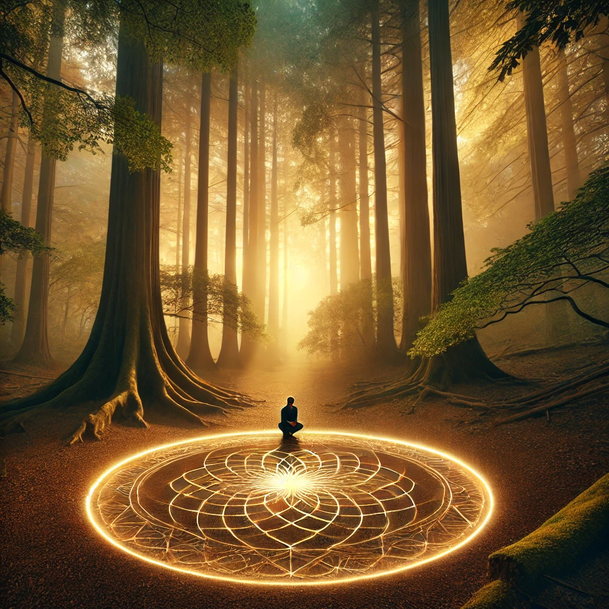

The compass hums softly in your hand, its needle pointing inward, toward a place unseen yet deeply felt. Closing your eyes, you sense a powerful pull, as though the very core of the world is calling to you. A wave of calm energy washes over you, guiding you deeper into yourself and the landscape around you.
Walking forward, you enter a tranquil grove, its center marked by a glowing circle etched into the ground. The circle pulses faintly, each beat syncing with your heartbeat. You kneel at its edge, feeling its energy radiating outward, connecting you to the world and beyond.
A voice, steady and grounding, whispers within:
“To seek the center is to find balance. It is the still point amidst chaos, the place where all paths converge. What will you find when you gaze into the heart of existence?”
The glowing circle seems to invite you inward, offering choices that reflect the balance you seek.

What will you do?